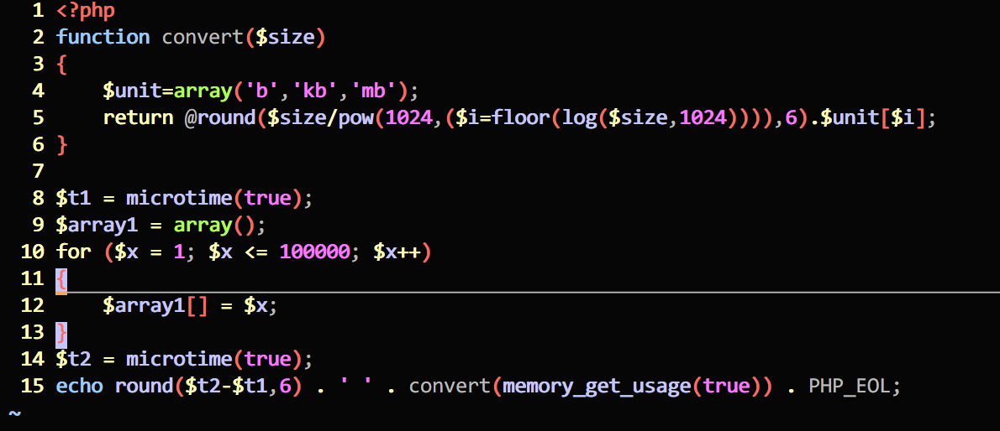
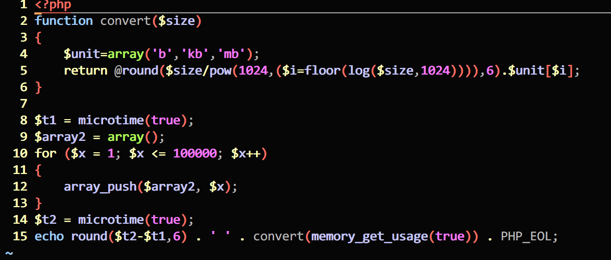
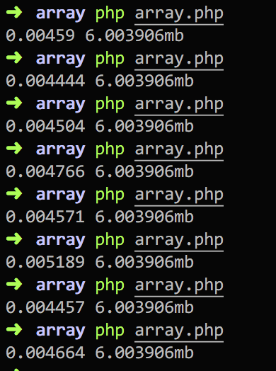
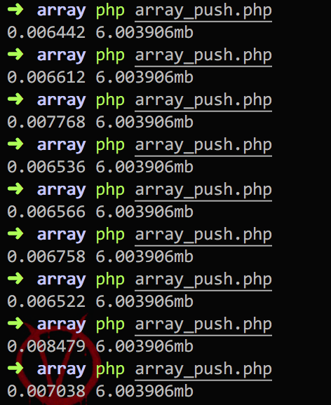

PHP中数组插入数据通常有这么几种：
$arr = array(‘apple’, ’banana’);$arr = array();
$arr[] = ‘apple’;
$arr[] = ‘banana’;$arr = array(‘apple’);
array_push($arr, ‘banana’, ‘orange’);在项目中，我们大部分情况都是先从数据库中获取数据，然后转成数组形式，而对于第一种情况，在定义数组的时候直接赋值往往只适合数据量很小，而且是已知的情况，所以就不存在什么代码优化了，我们主要讲第二种和第三种。
关于array_push的使用，就不多介绍，自己看官方文档(https://secure.php.net/manual/en/function.array-push.php)。
我们使用php 7.2来测试，并且没有做任何配置上的优化。测试方法：定义一个数组，分别用第二种和第三种方式插入10万条记录，代码大致如下：


convert函数用来查看内存占用情况，运行结果如下：


通过多次运行上述代码，可以发现直接使用数组变量赋值耗时在0.0045左右，而使用array_push的方式耗时在0.006左右，消耗的内存都是一样的，因为都是10万条记录。
对比两种方法，发现方法二确实比调用array_push快，因为在每次循环时函数调用需要消耗一些时间，但仅仅看上面的测试，并不觉得第二种方法比第三种方法快多少，完全可以忽略不计的。
的确，这种优化在绝大多数应用中和没优化没啥区别，但是当应用达到瓶颈的时候，每一处不起眼的优化可能都会使性能提高不少，况且我们的测试中数组的结构很简单，真实项目中数据类型不是这么单一，可能还是嵌套的数组，数组的大小可能也不止10万。
我们再来看看两者的差异，array_push()是函数调用，另一个不是，这就是说了，从代码量上看两者也是一样的，从数组结构上看，测试中我们都没有使用索引，默认都是从0开始，如果要使用key => value形式插入数据时，array_push()就不是很好处理了，这时使用法二就很方便：$array1[$key] => $x。
前面都是说array_push()怎么不好，但有时候array_push还是很好用的。比如我们要一次插入多个元素时，就可以这样使用：
$arr = array(‘a’, ’b’);
array_push($arr, ‘c’, ‘d’);
// $arr = array(‘a’, ’b’, ‘c’, ‘d’);通过上面对比可见，PHP中数组插值的方法有很多，虽然每种方法差不多，但了解每一种方法何时使用还是很有必要的。
欢迎关注我的公众号：